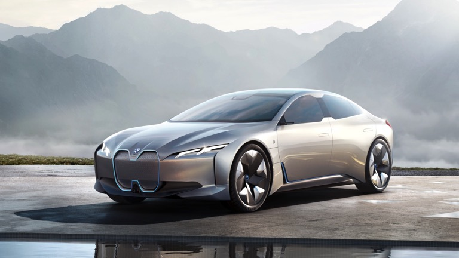
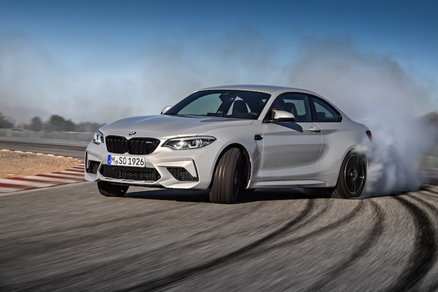
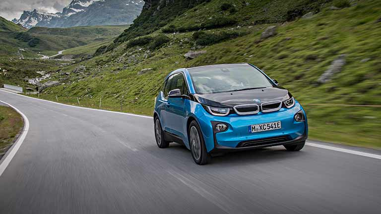

Driften. Met een auto dwars gaan geeft een nou eenmaal een enorme kick!
Ooit al een keer willen doen maar nooit van gekomen? Niet in het bezit van een zogenaamde driftauto?
Geen probleem. Voor de onervaren drifter hebben wij hier de oplossing!
Wat gaat u doen?
We starten met het gecontroleerd driften op onze gladde rotonde.
Na stevig te hebben geoefend met de techniek gaan we een stapje verder, Nat asfalt driften.
De ultieme vorm van wagenbeheersing. Natuurlijk krijgt u begeleiding van onze instructeurs en werken
wij
samen met u aan uw drift-skills.
Boeken?
Boeken van de training kan via onze website. Eventueel kunt u ook telefonisch boeken of per email.
*Deze Drift Experience is op basis van beginnende/onervaren drifters en wordt aangeboden in
lesauto's
van
BMW Driving Experience.
Het is niet mogelijk om deel te nemen met eigen (race)auto. Let op: beperkte plaatsen beschikbaar, tot 18 maart 2020 kunt u zich aanmelden voor deze
experience.
VOL=VOL
bmw i4

BMW i4 specs en lanceringsdatum!
Gepubliceerd op
In 2021 komt de BMW i4, een elektrisch aangedreven rivaal voor de Tesla Model 3 en de Polestar 2.
Intussen komt de Beierse constructeur met meer en meer informatie naar buiten.
van het begin...
In 2017 presenteerde BMW de i Vision Dynamics Concept voor op de IAA van Frankfurt, die loop 2021 in
productie gaat als i4.
Het wordt een elektrisch alternatief voor de 3 Reeks die de strijd aangaat met de Tesla Model 3 en de
Polestar 2.
In afwachting van het definitieve productiemodel onthult München reeds wat specificaties van die
elektrische
BMW i4.
BMW omschrijft het lijnenspel van de i4 als dat van een Gran Coupé, voor de aangedrijving zorgt het
eDrive-systeem van de vijfde generatie.
Het accupakket heeft een capaciteit van 80 kWh, wat zich vertaalt in een WLTP-rijbereik van 600
kilometer.
Met een 150 kW-lader heb je aan 35 minuten genoeg om de batterijen op 80% van hun totale capaciteit te
brengen.
De elektromodule van de BMW i4 heeft een vermogen van 531 pk en zou in staat zijn om de elektrische Gran
Coupé in 4 seconden van 0 naar 100 km/u te helpen.
De topsnelheid bedraagt 200 km/u.
bmw m2 competition

BMW M2 gaat streep straffer als Competition
Gepubliceerd op
Naar analogie met de M3 en M4 krijgt nu ook de M2 een Competition-uitvoering.
En als we zo lezen wat die allemaal omvat, lijken die eerder vermelde,
grotere BMW's met een serieus probleem te zitten.
Van 370 naar 410 pk
De make-over begint bij zijn motor, de 3 liter zes-in-lijn ,
die dankzij een nieuwe afstelling 40 pk en 85 Nm sterker wordt.
Een boost die de coupé brengt op 410 pk en 550 Nm. Ook de koeling is grondig herwerkt,
net als de smering en de inlaat. Uiteraard gaan de prestaties erop vooruit,
maar niet zo sterk als we hadden verwacht. Op de sprint van 0 naar 100 km/u wint
hij één tiende van een seconde: 4,2 seconden met de DCT-versnellingsbak (4,3 seconden in de gewone M2)
en 4,4 seconden met de handbak (in plaats van 4,5 seconden).
BMW verdient wel een applausje omdat het erin geslaagd is de stijging van de CO2-uitstoot te beperken
tot 10
g/km.
De topsnelheid is begrensd op 250 km/u maar kan als optie worden opgetrokken tot 280 km/u via het M
Driver’s
Package.
Looks, dynamiek en remmen
De M2 Competition wil zich uiteraard op nog meer vlakken onderscheiden.
Zo is er de specifieke lakkleur Hockenheim-grijs (al zijn alle andere kleuren ook nog steeds
verkrijgbaar)
en krijg je 19-duimvelgen met verschillende bandenmaten voor- en achteraan. Ook de rijdynamiek zou erop
vooruitgaan
en dat door middel van een in het motorcompartiment geïntegreerde antirolstang. Naar analogie met de
M3/M4,
M-modellen waarvan
we weten wat een dergelijke ingreep vermag met de stijfheid en bijgevolg stuurprecisie.
bmw i3

BMW: 'Dankzij bedrijfswagens heeft België een van de milieuvriendelijkste wagenparken'
Gepubliceerd op
BMW kondigt 25 geëlektrificeerde wagens, waaronder 12 volledige elektrische modellen, aan tegen 2025.
De Duitse autobouwer gaat zijn productielijnen aanpassen opdat die ook geschikt zijn voor elektrische
wagens.
'De batterijtechnologie is momenteel in volle ontwikkeling', zegt CEO Peter Henrich van BMW Group Belux.
'We gaan een forse groei zien van elektrisch aangedreven voertuigen en zijn daar klaar voor,' aldus
Henrich.
Hij begrijp echter de grote paniek rond diesel niet. 'Diesel blijft een sleuteltechnologie en het
efficiëntst voor wie lange afstanden aflegt.'
Obstakels
Voor een grote doorbraak van de elektrische wagen zijn er bovendien nog obstakels, merkt Henrich op.
'Zo moet er werk gemaakt worden van voldoende laadinfrastructuur. En er zal veel meer elektriciteit
geproduceerd moeten worden.
Als die productie gebeurt door middel van steenkoolcentrales, dan is je milieuwinst van de elektrische
wagen
meteen weg.'
Een doorbraak van de elektrische auto zal volgens Henrich ook afhangen van het overheidsbeleid, en dan
met
name van de fiscale stimuli.
Quota opleggen is volgens de topman geen goed idee.